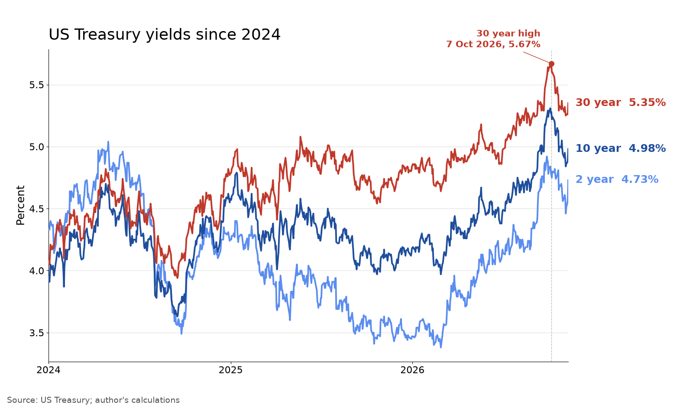
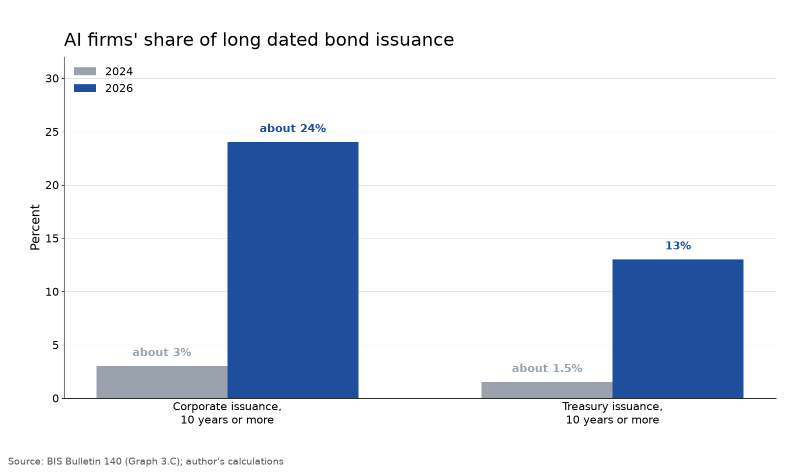

AI firms are now borrowing at the long end of the bond market
From cash flow to credit
The Bank for International Settlements (BIS) expects capital spending by the five largest US hyperscalers (Alphabet, Amazon, Meta, Microsoft and Oracle) to exceed 800 billion dollars by the end of 2026, around 2.5 percent of US GDP, and more and more of it is borrowed. In a Bulletin published on 27 October, the BIS puts the five firms' gross bond issuance this year at 222 billion dollars by September, most of it at long maturities.
Long dated, and partly off the balance sheet
The scale is easiest to see against US government borrowing. According to the BIS, hyperscaler bonds with maturities of 10 years or more made up about 24 percent of corporate issuance at those maturities in 2026, up from about 3 percent in 2024. Measured against gross Treasury issuance at the same maturities, the share rose from about 1.5 percent to 13 percent (Chart 2).
Some of the build out is financed through separate vehicles that own a data centre and lease it to the tech firm. The BIS reports, citing market sources, that 75 to 100 billion dollars of bonds and asset backed securities linked to such vehicles have been placed this year. It also cites Moody's Ratings, which puts the largest hyperscalers' data centre lease commitments at 1.2 trillion dollars by mid 2026, of which around 820 billion dollars relate to leases that have not yet started.
These structures are not cheap. Take the Hyperion data centre, a joint venture between Meta and funds managed by Blue Owl, financed in part with 27.3 billion dollars of privately placed A+ rated senior secured bonds. Those bonds priced at 225 basis points over Treasuries in October 2025. Two weeks later, Meta's own 20 and 30 year bonds priced at 88 and 98 basis points over Treasuries. The vehicle paid a far wider spread than the firm behind it.
What it has done to yields so far
Is this borrowing pushing up long term interest rates? A larger supply of long dated bonds tends to raise the compensation investors demand for holding them, the term premium. The BIS tested this on 18 days in 2026 when news about AI financing reached markets. On those days the US 10 year term premium rose by around 1.5 basis points relative to other days. That is modest: the term premium typically moves by around 3.5 basis points a day, and the increase was reversed within two trading days. Investment grade corporate spreads did not change significantly.
The Treasury data point the same way. Between 2 January and 10 November 2026 the 2 year Treasury yield rose from 3.47 to 4.73 percent, or 126 basis points. The 10 year rose 79 basis points, from 4.19 to 4.98 percent, and the 30 year rose 49 basis points, from 4.86 to 5.35 percent (Chart 1). The 30 year did reach 5.67 percent on 7 October, its highest close since at least the start of 2024, but it has since fallen back by 32 basis points. If long dated issuance were the main force, the long end would be expected to lead. Instead the short end, which tracks expected policy rates, rose most.

The wide gap between the lines in Chart 1 is mostly a story about the short end. In 2024 the 10 year yield sat as much as 47 basis points below the 2 year, and the 30 year was never more than 61 basis points above it. Then the Federal Reserve cut its policy rate three times in late 2025, on 17 September, 29 October and 10 December, to a range of 3.50 to 3.75 percent. Over 2025 the 2 year yield, which follows expected policy, fell from 4.25 to 3.47 percent while the 30 year barely moved, from 4.79 to 4.84 percent. The 30 year gap peaked at 140 basis points on 22 December 2025, and the 10 year gap at 74 basis points on 30 January and again on 9 February 2026. Since then the Fed held rates until a quarter point rise on 16 September 2026, and by 10 November the 30 year stood only 62 basis points above the 2 year.
What else moved long rates
The BIS Quarterly Review of September describes a broader rise in long yields. Between 1 June and 3 September 2026, 10 year government bond yields rose by 31 basis points in the United States, 34 in Germany, 27 in Japan and 24 in the United Kingdom, and 30 year yields reached multi decade highs in many jurisdictions. The main drivers were a tighter expected policy path and higher term premia. After the conflict with Iran flared up at the end of June, the US 10 year term premium rose by around 10 basis points, about 40 percent of the rise in the 10 year yield. The BIS names tech firms' bond issuance as one possible factor, alongside policy uncertainty and the fiscal outlook, and says their contributions are hard to separate.
This matters beyond the United States: Treasury yields are the benchmark for pricing mortgages and corporate bonds, and they influence long term rates in other economies.
The pace is the risk
The concern is the trend, not today's effect. Much of the new AI debt is placed with the same pension funds, insurers and other long term investors that hold government bonds. If supply keeps expanding at this rate, the BIS warns, a concentrated group of these investors will need to absorb a larger stock of claims with correlated exposures. That could put more lasting pressure on long term yields and, where borrowing moves into opaque vehicles, add to financial stability risks.

Three things are worth watching: whether the long maturity shares keep climbing, whether the yield response to AI financing news grows or lasts longer than two days, and how much borrowing moves off balance sheet. For now, AI firms are a big new borrower at the long end, not the reason long rates are high.
Sources
- BIS Bulletin no 140, Mathias Drehmann and Egemen Eren, "Building AI on credit: structures and spillovers", 27 October 2026: https://www.bis.org/publications/bulletin-140-building-ai-credit-structures-and-spillovers.pdf
- BIS Quarterly Review, September 2026, "Yields climb, yet risk appetite holds firm", 14 September 2026: https://www.bis.org/publications/qr-202609.pdf
- US Department of the Treasury, Daily Treasury Par Yield Curve Rates, 2024 to 2026: https://home.treasury.gov/resource-center/data-chart-center/interest-rates/TextView?type=daily_treasury_yield_curve
- Federal Reserve, FOMC statements of 17 September, 29 October and 10 December 2025 and 16 September 2026: https://www.federalreserve.gov/monetarypolicy/fomccalendars.htm
- Code and data for the charts: https://github.com/eokinyo/ai-long-bonds-2026